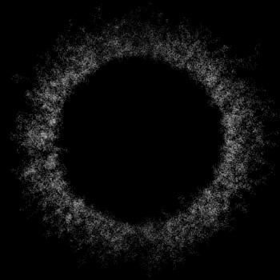
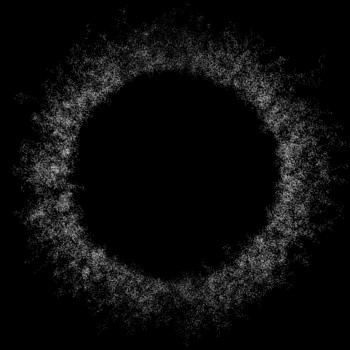

Hemos hecho reseñas, hemos hecho un Top específico en el ámbito nacional, hemos incluido propuestas nacionales dentro de nuestra sección mensual de bandas emergentes, y aún así siguen habiendo discos made in Spain interesantísimos de los que no hemos hablado todavía. Sintiéndonos en el deber de seguir insistiendo que prestemos más atención a lo que se hace en nuestro país, y como como ya hicimos el año pasado, os presentamos 8 grupos con trabajos publicados en 2014 deberíais escucharlos, sí o sí.
–
Our Next Movement
Polyhedral Trails

Desde Valencia llega la nueva apuesta de Aloud Records, un cuarteto que solo su portada nos advierte de sus querencias por la geometría y por ende, las matemáticas; pero error, aquí no encontraréis un trabajo de math-rock instrumental puro ni sesudo, sino amplios horizontes y muchos paisajes que pintar. Polyhedral Trails es la muestra de un grupo con enorme personalidad propia, con influencias que van desde el post-hardcore al progresivo, orientado a las guitarras —que saben enroscarse entre ellas como dos serpientes enfrentadas—pero con un resultado final lleno de colores y sonidos añadidos, desde chelos a teclados.
–
Tercer Sol
Conjunto Vacío #2 / EP
 
{kind=link}
Más interesantes propuestas desde Levante, ahora le toca el turno a una mucho más oscura. Según su bandcamp es propuesta es “cavar un hoyo para hacer música para cavar hoyos”. Tercer Sol son un cuarteto (gente de Siesta y The Wind Atlas involucrada) que este año han publicado un single, Conjunto Vacío #2 y un EP de tres temas. Buen shoegaze de corte psicodélico, del que invita al trance con guitarras espesas que crean muros ruidosos pero donde todo queda bien definido, sintetizadores incisivos, voces enterradas y recargadas de reverbs, con una producción tal y como se la espera.
–
Ciempiés
Ciempiés / Óptimo Máximo / Buda Consumido
{kind=link}
{kind=link}
{kind=link}
Parece sorprendente que Ciempiés, o lo que es lo mismo Fran H., haya lanzado tres discos en un solo año —el último una obra de homenaje a la novela de Italo Calvino “El Barón Rampante”— y no se le haya dado mayor atención por parte de los medios. Lo que este proyecto personal nos propone es música instrumental con un tono melancólico y otoñal, cercana en términos al post-rock, compuesta por elementos humildes (guitarra, bajo, batería) y sin aderezos grandilocuentes lo que realza la honestidad y la accesibilidad.
–
Days Left Behind
Outlines

Primer trabajo de esta banda barcelonesa, anteriormente conocida como Nihilus, y que bebe de un metal de aromas nórdicos y oscuros, siendo los principales referentes Katatonia, especialmente por su vocalista, que recuerda a Jonas Renske y que se caracteriza por una voz realmente aterciopelada que imbuye al conjunto una gran dosis de melodía y paz triste en la onda de Anathema. Pero esto solo es una faceta de esta propuesta, las líneas de teclado, el metal progresivo y la contundencia, aparte de poner encima de la mesa un potencial técnico muy serio, aportan el picante a la fórmula, consiguiendo un sonido cohesionado y con muy buen gusto.
–
Medule
Beneath The Shallow

Los madrileños han cocinado durante dos años su debut y el resultado es notable. Realizan una suerte de metal alternativo, melódico, con claras querencias hacia los riffs de compases irregulares de la música progresiva (se nota que gusta Tool) pero sin volcarse en demasía en el plano técnico. Lo verdaderamente importante es que las canciones son redondas, fluyen a la perfección gracias a una voz seductora que recuerda en el timbre a la de David Draiman de Disturbed pero que, no os preocupéis, no imita sus irritables cacareos. Con temas tan bien escritos, a poco que la banda se suelte más con ideas un poco menos trilladas y más frescas, se podría convertir en mi referente del metal alternativo nacional.
–
No More Lies
In The Shade Of Expectation

Hablamos de un grupo que es todo un referente en la escena post-hardcore estatal (buque insignia del sello BCore) pero que desafortunadamente no es precisamente se prodigue en lo que a publicaciones discográficas se trata, por lo que hablar de ellos este año era algo que no se podía pasar por alto. El resultado de In The Shade Of Expectation es tan bueno como se podría esperar. Energía que sale disparada electrizantes guitarrazos e ideas tan frescas como un pez recién capturado.
–
Cohen
Rooms
{kind=link}
Su segundo disco, Cancer Days, fue la evidencia de su maduración y la demostración de que estos chicos tenían las cosas muy claras. Partiendo de esos sólidos cimientos, el grupo vasco se ha re-adaptado a su nuevo formato como trío, avanzando en composiciones más inmediatas de post-hardcore con recuerdos de Refused pero manteniendo el brillo, el látigo y las efectivas melodías que siempre les han caracterizado. La producción, mejor y más limpia que nunca, obra del combo Westline Studios / Ultramarinos Costa Brava.
–
Wis(h)key
Violent Chapter

El grupo catalán ya nos voló bien la boina con Manifesto Of New Standards y su groove-metal con querencias sureñas, pero al escuchar su tercer disco, Violent Chapter lo primero que te llevas es un buen puñetazo en la cara. Más cabreados que nunca, Wis(h)key reparten mandobles a doquier. Cinco temas con las revoluciones en todo lo alto y solo bajando para la versión acústica de Alone. La producción ha redoblado la agresividad —algunas guitarras suenan como cuchillos—, la técnica ha comenzado a tomar más protagonismo y la visceralidad está más presente que nunca.
Apoyános